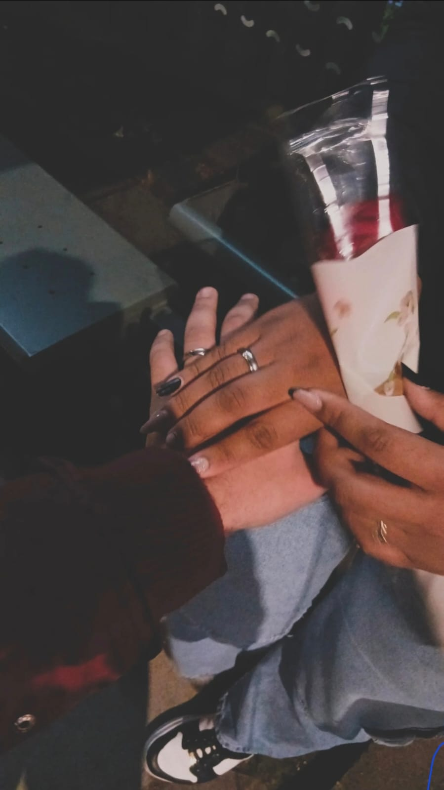
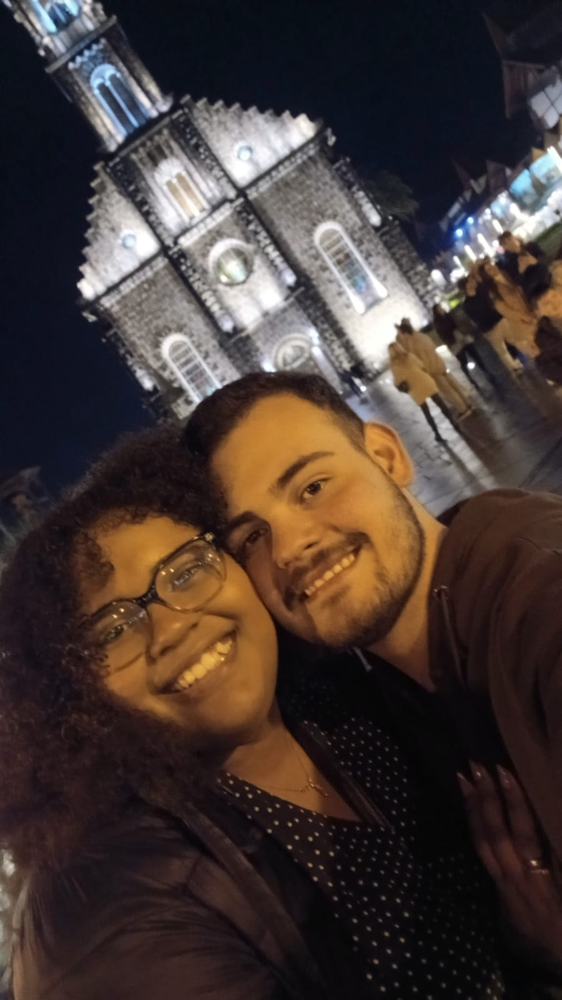
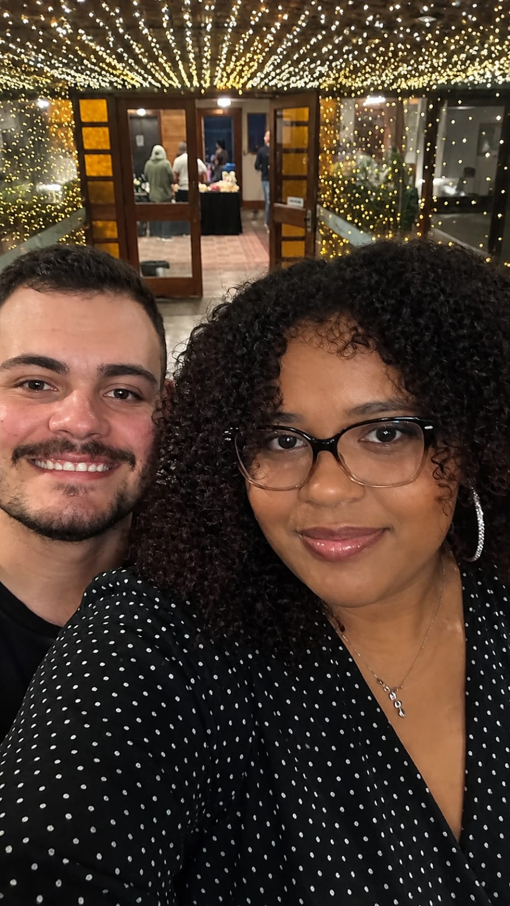
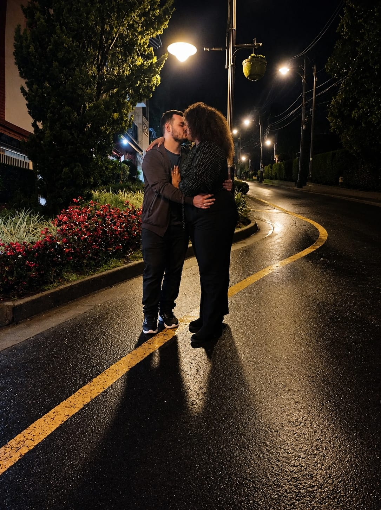
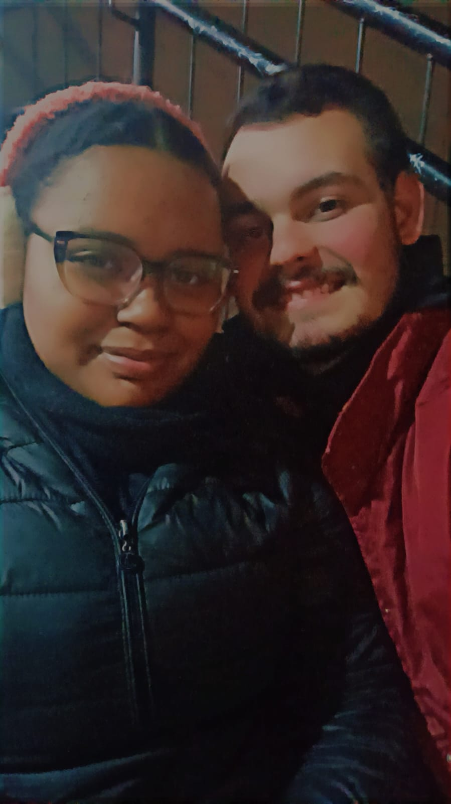
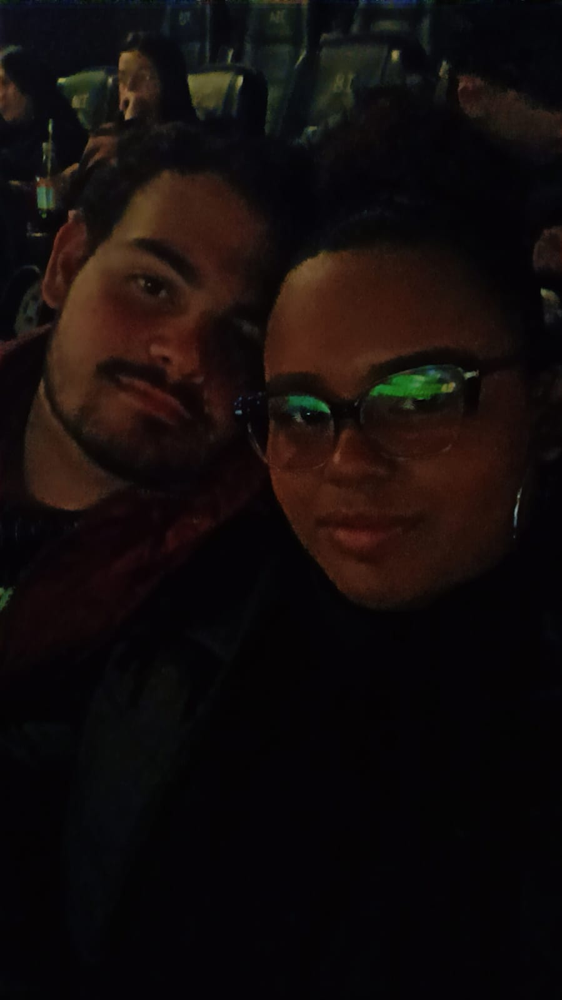
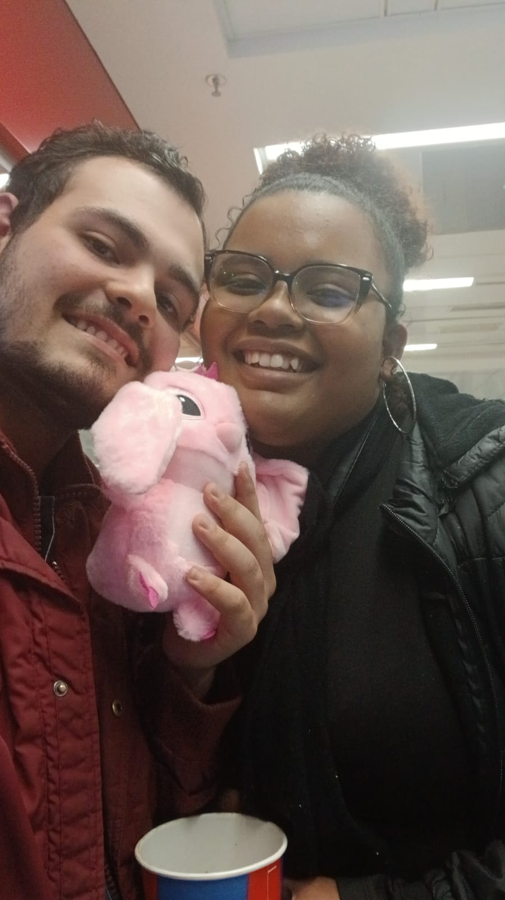

Tudo começou em um aplicativozinho onde, sinceramente, eu não estava botando nenhuma fé de que eu realmente acharia alguém, até que de repente — BOOM! — deu match. Quando eu vi a sua foto pela primeira vez, olhei e dei um grito: "O QUÊ???", sem acreditar que a mulher mais linda do mundo inteiro tinha curtido o meu perfil.
Então eu, muito nervoso e empolgado (principalmente nervoso), preparei a minha melhor cantada para te conquistar. Você riu, e logo eu pensei: "Caralho, funcionou!". Foi aí que começamos a conversar, e eu fui me apaixonando cada vez mais por você.
Eu queria muito te ver e te conhecer pessoalmente, mas às vezes faltava dinheiro, eu tinha um compromisso religioso e, além disso, ficaria de resguardo durante 8 dias (se não me engano kkkkkkk). Eu não podia nem sair com você para beber e muito menos te beijar. Até que, passado esse tempo, tomei a decisão de que, mesmo sendo uma coisa simples, eu queria ir te ver e te conhecer pessoalmente.
Foi o dia em que fui lá determinado e mandei mensagem perguntando se você gostava de bolacha e energético, e perguntei os sabores kkkkkkkk. Eu lembro que, quando fui te encontrar, sentia meu estômago revirar de tanta ansiedade. Eu estava muito nervoso, trêmulo, te mandando mensagem, e você acabou ficando mais nervosa também kkkkkkkkkk. Lembro até hoje que você deu a volta no centro, só que a localização expirou antes! Fiquei apavorado, porque a qualquer momento você poderia chegar, mas aí, graças à sua explicação de onde você iria descer do ônibus, eu consegui ficar esperto e te esperar no lugar certo, ao invés do outro lado da rua KKKkkkkkkkk.
E lá estava você, toda encolhida mexendo no celular, enquanto eu te mandava mensagem dizendo que já tinha te visto — só que você estava muito nervosa e muito tímida KKKKKKKKKKKKK. Até que você foi chegando mais perto e eu disse: "Jessyca?". Você levantou a cabeça com uma cara assustada e disse: "Que susto!" KKKKKKKKKKKKKKKKKKK. Eu achei aquilo tão bonito, meu Deus! Só que você ainda estava muito tímida, eu tentava te alcançar o presente, mas você estava travada, sem saber como reagir, até que finalmente consegui te entregar na frente do colégio.
Ali a gente começou a conversar, você foi se soltando e, sinceramente, eu estava encantado com você: uma mulher tão linda, tão interessante, tão cheirosa... Eu nem acreditava direito que estava conversando com você kkkkkkkkk, que eu tinha conseguido finalmente te ver! Aí você falou sobre o seu curso, sobre você, sobre a sua formatura, e eu contava sobre mim, sobre o curso de programação, fazia umas piadas e você caía na gargalhada.
Até que, de repente, O SEU PAI PASSA NA FRENTE DO COLÉGIO! Naquela hora eu me apavorei — normalmente o pai morre de ciúmes da filha —, e quando me dei conta de que ele passou e me viu, pensei: "Tô morto" KKKKKKKKKKKKKKKKKKK (eu ainda rio muito quando lembro que ele me chamou de branquelo azedo KKKKKKKKKKKKKKKKKKKKKKK).
Aí conversamos mais e mais e mais, até que deu a hora de você subir para a sala. Nossos rostos já estavam bem próximos, até que eu criei coragem e pensei: "Ok, é agora, se eu não tomar uma atitude agora eu vou me arrepender amargamente". Então — BOOM! — nosso primeiro beijo. Amor, sério, eu fiquei alucinado! Senti como se a minha cabeça estivesse explodido, e a gente se beijou mais e mais e mais, até que realmente você precisou subir para o curso.
A gente se despediu e eu fui para casa. Quando saí do colégio, saí saltitando! Eu estava extremamente feliz, era o homem mais feliz do planeta, mds KKKkkkkkk. E foi assim o nosso início, gatinha. A gente continuou conversando e, desde a primeira mensagem, nunca mais parou de se falar. Depois, no dia , veio finalmente o pedido de namoro, e desde então eu venho sendo o homem mais feliz do mundo todos os dias, vivendo momentos maravilhosos ao seu lado, amor.
❤️❤️❤️❤️❤️❤️❤️❤️❤️❤️❤️
Toque na página para virar
♥

Nossa primeira viagem ❤️



Nossa primeira foto juntos ❤️

Nossa primeira vez no cinema juntos ❤️

Nossa filha kkkkk ❤️
♥
Amor da minha vida, desde o dia que você chegou na minha vida, absolutamente tudo mudou,